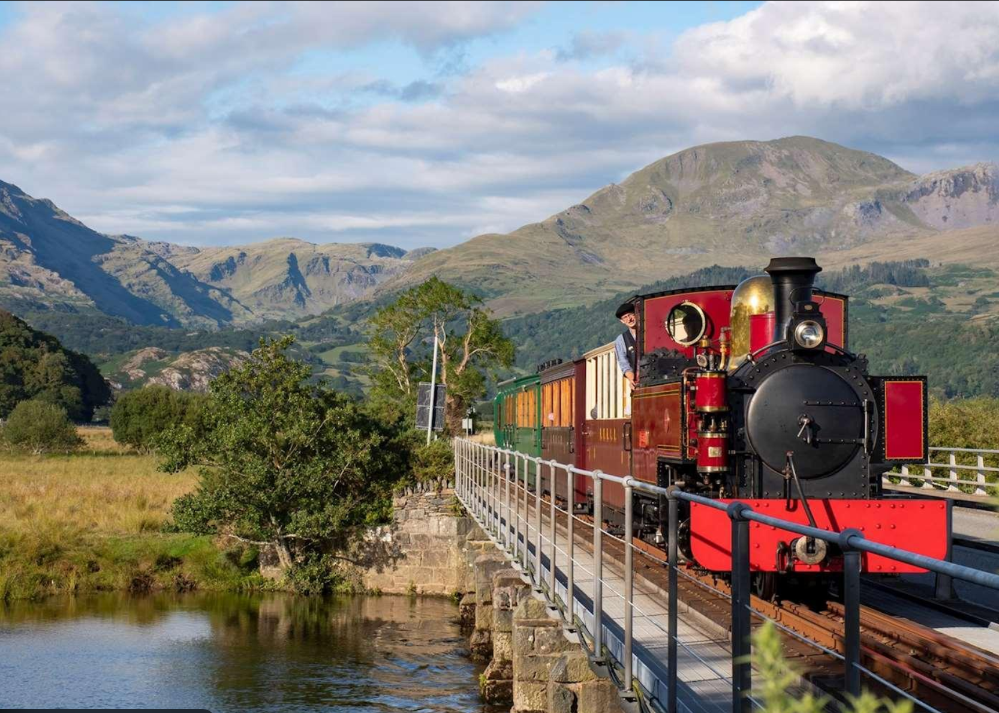

Things To Do in North Wales
North Wales is a fantastic destination for visitors of all ages, offering outdoor adventure, historic landmarks and beautiful coastal scenary. Whether you enjoy hiking, exploring castles or relaxing on the beach, there is something for everyone throughout the year.
🏞️ Popular Activities
🥾Hiking
🏰Castle visits
🚴Cycling
🏖️Beach activities
📸Sightseeing
🧗Zip World adventures
🚂Steam railway trips
🦅Wildlife watching
🗺️Activity Guide
| Activity | Location | Best Time to Visit |
|---|---|---|
| 🥾Hiking | Snowdonia (Eryri) | Spring to Autumn |
| 🚂Steam Railway Trip | Snowdonia (Eryri) | All Year |
| 🏰Castle Visit | Caernarfon | All Year |
| 🏖️Beach Activities | Anglesey | Summer |
| 🦅Wildlife Watching | Anglesey | Spring and Summmer |
| 📸Sightseeing | Betws-y-Coed | Spring to Autumn |
| 🎢Zip World Adventure | Betws-y-Coed | Spring to Autumn |
| 🏛️Historic Visit | Beaumaris | All Year |
💡Visitor Tips
- Wear comfortable walking shoes.
- Bring waterproof clothing because the weather can change quickly.
- Book popular attraction in advance during summer.
- Respect the countryside, local wildlife and historic sites.

